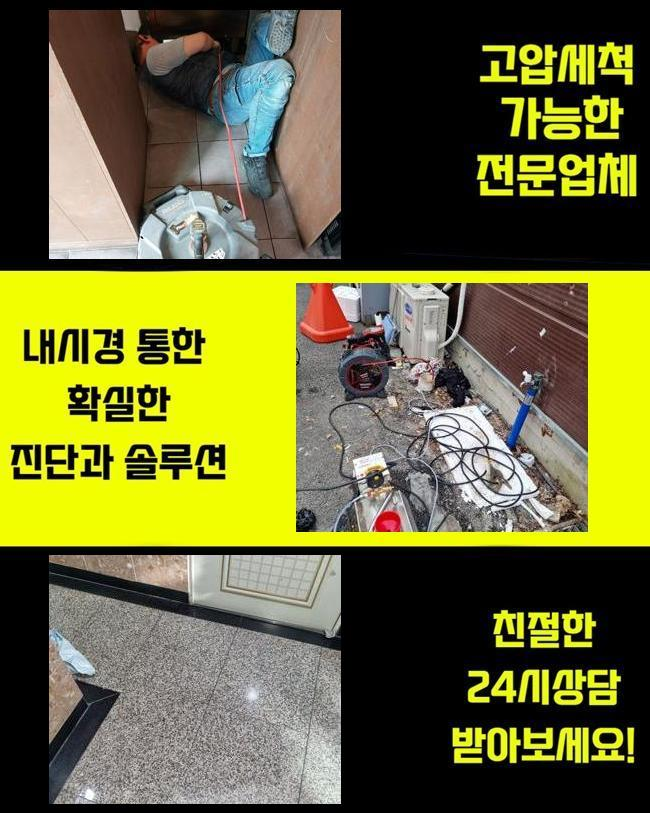
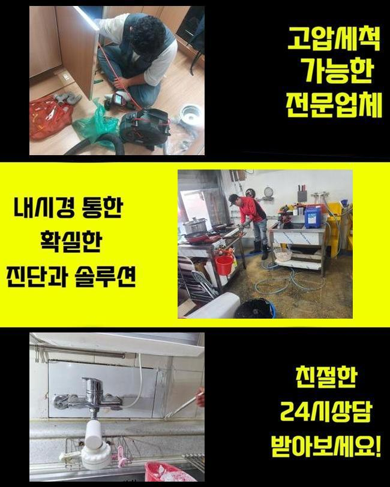
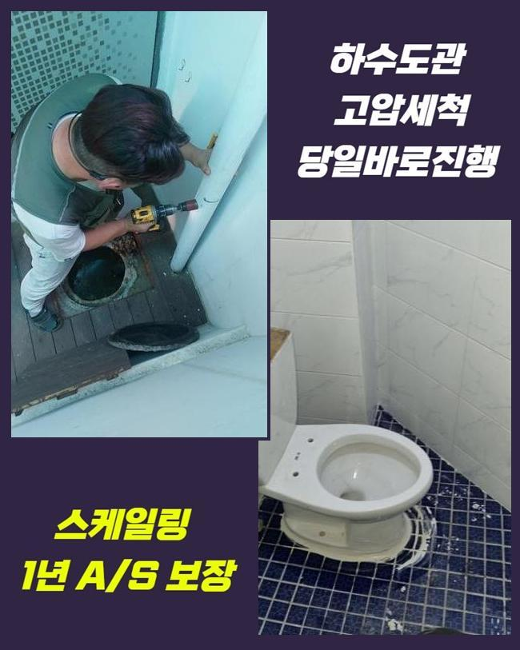
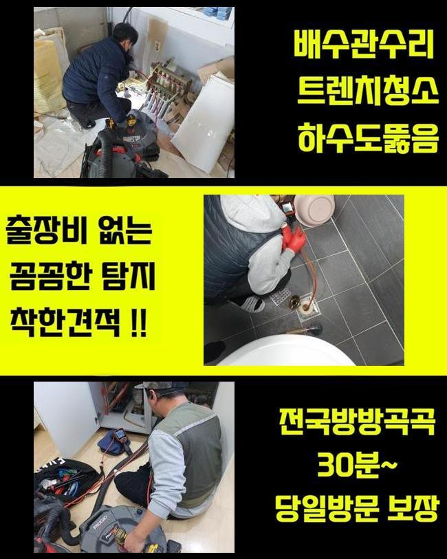
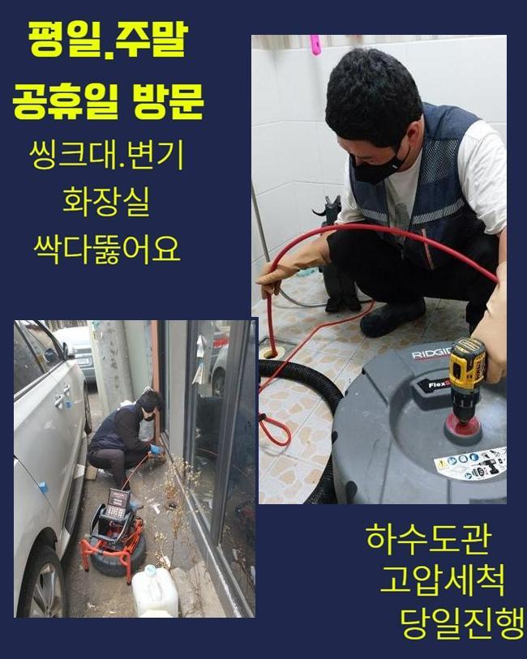
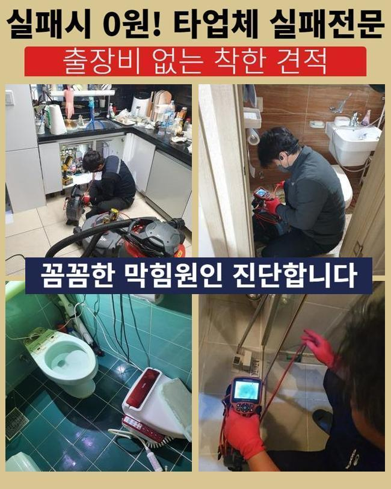
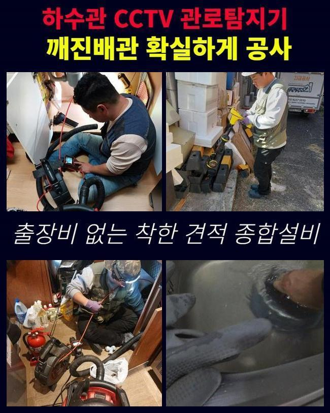

🏠 신장동씽크대배수관막힘 갈곶동 배수로뚫기 누수탐지공사
용인 갈곶동 싱크대막힘 전문 시공 후기

📋 작업 개요
- 위치: 용인 갈곶동, 갈곶동, 용인
- 서비스 유형: 싱크대막힘, 하수구막힘, 배관막힘, 누수수리, 역류해결, 뚫는업체, 배관청소, 설비공사, 악취차단
- 작업 일시: 2025. 5. 19. 10:27
- 업체명: 하수구수사대 (010-5615-2118)
🔍 문제 상황
신장동씽크대배수관막힘 갈곶동 배수로뚫기 누수탐지공사
하수구의 마비가 일어나는 문제점들은 다수지만 끈적끈적한 슬러지들과 석회가 흔한 방해물이라고 선정할 수 있어요
하수구 공사를 하고서 막힘과 역류같은 일들이 유발되는 경우라면 작업 중 들어간 석조 등을 원인으로 생각을 하는 편이 적중할 수 있는데요
향후 소개할 현장도 작업을 하면서 다수의 문제요소들을 배관 속에서 끄집어올리게 됐습니다
가정집에서 하수구막힘이 생기고 오래 방치되면 가까운 세대로의 전이가 번질 수 있는 부분이니 조속히 통수를 막는 대상을 없애야합니다
게다가 상가라면 금전적인 부분과 이어진 부분이기 때문에 조금도 지체하지 않는 처리를 해드려야 합니다
이번에 소개드릴 하수구 설치장소는 상가 개선을 위한 인테리어 이후부터 갑자기 하수구 기능이 마비돼서 고충이 어마어마하셨다고 말씀주셨어요
보통 인테리어 공사 이후 작업에 들어간 잔해들을 수습하지 않고서 관로로 흘려보내면 치명적인 막힘을 만듭니다
갖가지의 문제들로인해 배관장애가 벌어질 수 있으니 확신을 가지지 않고 필요한 장비들을 빠짐없이 챙겨서 하수문제가 있는 건물로 향했습니다
작업지에 도착해서 상황의 이모저모를 봤더니 수전이 연결된 배수구의 물막힘이 일어난 것 같더군요
석션 장치로 근처의 오물들을 없애주고 파이프 안의 하수 없애주기 시작했습니다
너무 견고하게 차단되어서 석션 장비만으로는 불가능에 가까웠지만 다음 작업을 위해서라도 희뿌연 물기를 삭제하는 게 먼저였습니다

🔎 원인 분석
💡 전문가 진단: 정밀 진단 장비를 사용하여 슬러지의 고착 여부를 판명하고 타격/세척 작업을 실시했습니다.
하수구를 정상적이게 복구하려면 종합적인 장비의 사용이 들어가야 완수할 수 있습니다
가장 기본이 되는 석션과 샤프트 기기는 필수이고 안을 명확하게 체크하려면 내시경도 동원해야 합니다
직경이 크다거나 깊숙한 안쪽에 설치되어 있다면 물을 강하게 발사하는 고압 청소기를 동시에 쓸 수 있으니 매번 이것도 꼭 챙기고 있습니다
요즘은 여러 차원의 장치들이 점점 뛰어나게 변하니 뚫는 작업도 그리 곤란하지 않아요
작업의 담당자가 만일 기술력이 미흡하면 장치의 제 기능을 활용하기 까다로울 겁니다
현장파악을 완수하지 못한 채 사용법에 맞지 않게 가동한다면 하수관의 심한 고장까지 연결될 수 있는 부분이니 배관 카메라를 써서 하수구 안의 탐방을 끝낸 후 뚫어내는 기기를 통한 작업을 시행하는 게 필요합니다
내부에 찰랑대던 물을 제거하고 노즐 끝에 달린 카메라를 배수구 안으로 들여보내서 탐색해 나갔습니다
추정했던 것과 같이 진흙같이 보이는 물질과 비닐조각같은 물질들이 빼곡하게 채워져서 통수가 차단되는 현상을 알아차릴 수 있었습니다
특히 리모델링에 관련한 시공을 했다면 관로로 오물이 들어가지 않게끔 작업하면서도 신경써서 분리배출을 해야 합니다!
내부의 깊숙한 곳에서 하얀색 덩어리가 보였는데 시공의 중간과 끝 부분에서 백시멘트 가루가 안으로 떨어졌고 덩어리화가 된 것을 두눈으로 목격할 수 있었습니다
아무래도 공사하고 남은 백시멘트를 방출한 듯 했습니다
찌꺼기들로 뒤덮여있는 상황이라 물이 이동하지 못한 것입니다

🔧 작업 과정
지속적으로 내시경으로 안을 주시하며 분쇄 업무를 신중하게 해드렸습니다
샤프트기기를 활용하여 슬러지를 자잘하게 잘라서 투출하기를 반복했습니다
갈아낸 찌꺼기를 석션기로 흡입을 해보았는데 거대한 덩어리가 밖으로 방출됐습니다
반복적으로 제거작업을 해주었지만 시멘트가 강직도가 높다보니 배관 교체작업까지 해야하는 심각한 상황으로 작업 중에 절감했습니다
플렉스샤프트만 적용해서는 속 시원한 성과를 내지 못할 듯 하여 파이프에 데미지가 생기는 단계를 고수하면 배관이 부서질 수도 있겠다 싶었습니다
굴착을 진행한 다음에 배관을 직접 체크한 뒤에 노선을 결정짓기로 했습니다
고객님께도 관련된 부분을 설명 후 굴착단계를 진행했습니다
카메라로 보았 듯 시멘트 덩어리가 누적돼서 파이프라인이 중단된 것 같더라고요
바닥부 공사 이후에 대강 처리된 미세분진들이 쌓이고 쌓여 문제가 된 겁니다
시멘트 가루들은 곧바로 말라붙는 특징이 있다보니 관로 성능을 중단되게 만드는 상황들이 막힘 작업지에 가보면 쉽게 감지되는 사안입니다
트러블이 있는 부분을 멀쩡한 신규 자재로 이어주었습니다
관로를 교체할 때에도 단차가 없이 일정하게 분리해줘야 하며 갈아준 부위에도 틈새가 벌어지지 않아야 합니다
배관 연결부위를 완벽하게 끝마치지 않는다면 시간이 가면서 틈이 벌어지고 쩍 벌어져서 결국 누수로 연결될 수 있거든요
파이프가 고정되지 않는다거나 망가지는 상황이 없게끔 완성도있게 배관교체를 끝냈습니다
샤프트로 분해한 찌꺼기들이 수북하게 꺼내졌습니다
이처럼 상당한 양의 이물질이 좁은 직경에 꽉 들어차서 통수불능은 당연한 처사였어요
하수가 정상적으로 이동하는지 대량의 물을 받아서 한 번에 폐수시켜보는 과정을 통해서 배수 기능 검사에 들어갑니다
우수한 작업으로 물이 끊기는 증세가 없이 잘 배출되는 변화를 보고서 마무리 미장 공사로 보기좋게 마무리했어요
시멘트를 구멍 안에다 넣어서 배관이 움직이지 못하게 하고 그 다음은 평평하고 최종마감을 해줍니다


✅ 작업 완료
누수를 막기 위한 방수 레이어를 쌓아주고 아까 탈거했던 타일 자재를 틀림없이 부착합니다
하수구를 고치고 나서 철거했던 바닥부에 방수 시공을 하지 않으면 밑집에도 누수가 발생될 수 있는 부분이니 작업 후의 복원단계도 신경써서 다듬어드립니다
시멘트가 말라야하니 내일까지는 공간 사용을 자제할 것을 당부드린 후에 막힘 역류가 동시에 생겼던 하수구 개선을 성공할 수 있었어요!
건물 내 하수구문제들은 그 특성이 다양한데 이번처럼 욕실 배수구 쪽의 문제도 자주 생기기에 관련 문의들을 꾸준히 주시는 부분입니다
시간 관계없이 출장을 가므로 전화만 주신다면 막혀서 미진한 하수구 통수를 안전하고 깔끔하게 고쳐드리겠습니다




⚠️ 베란다 누수 및 방수 관리 방법
- ✅ 비가 많이 올 때 창틀 주변이나 아래층 천장에 얼룩이 생기는지 정기적으로 확인해 보세요.
- ✅ 우수관 주변 실리콘 마감이 들뜨거나 깨진 틈새가 있는지 손상 여부를 수시로 체크하세요.
- ✅ 베란다 바닥 타일의 줄눈(메지)이 소실되면 그 틈으로 물이 침투하여 누수가 유발됩니다.
- ✅ 누수 의심 증상 발견 시 방치하면 아래층 손실이 커지므로 즉시 전문가의 진단을 받으십시오.
💡 핵심 정리
- 확실한 장비 작업(내시경 점검 및 샤프트 스케일링)으로 원인을 뿌리 뽑습니다.
- 작업 후 1년 이내에 동일한 부위 재발 시 100% 무상 A/S 서비스를 보장합니다.
- 서울 · 경기 · 인천 전 지역에 24시간 언제든 긴급 출동할 수 있도록 항시 대기 중입니다.
❓ 자주 묻는 질문 (FAQ)
🚨 용인 갈곶동 싱크대막힘 문제로 고민이신가요?
정확한 원인 진단과 확실한 시공으로 재발 없는 해결을 약속드립니다.
24시간 긴급 출동 | 서울 · 경기 · 인천 전지역 | 1년 내 재발 시 무상 A/S